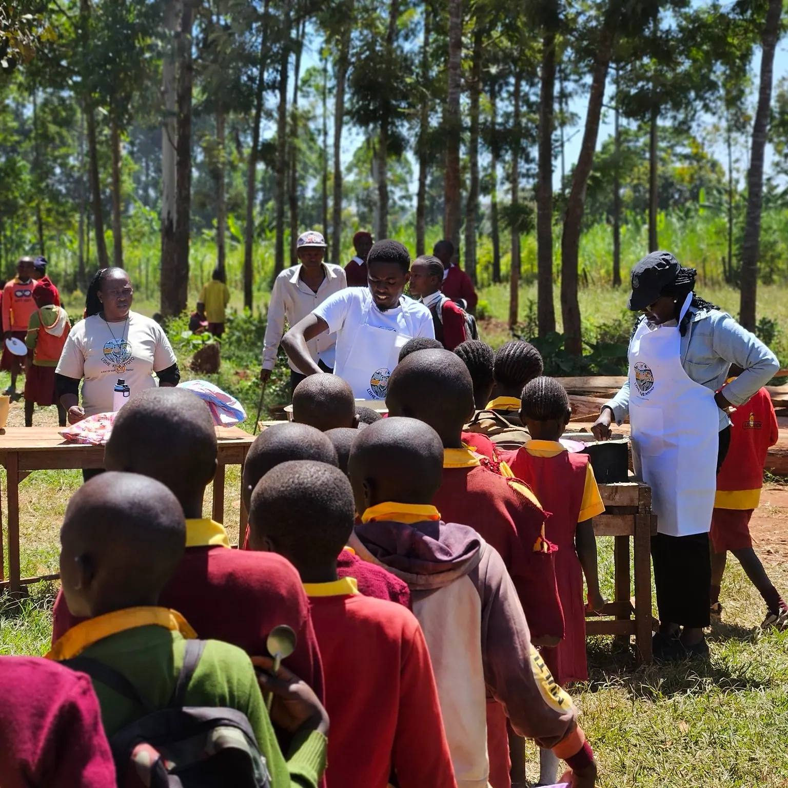

"Our school attendance jumped from 61% to 94% in one term."

Mr. Samuel Barasa has been head teacher at Cherang'any Primary for 11 years. He watched generations of children arrive hungry and struggle to learn. When the Lishe Kwa Mtoto program began in January 2024, he tracked the attendance data carefully. By April, the numbers told a story he had never seen before: from 61% daily attendance to 94%, a transformation he credits entirely to the morning meal.
"The children come eager to learn. They arrive early. They stay engaged through to lunch. Teachers are happier because they are actually teaching, not managing hungry, restless children."